|
|
| hard corals text index | photo index |
| Phylum Cnidaria > Class Anthozoa > Subclass Zoantharia/Hexacorallia > Order Scleractinia > Family Dendrophyllidae |
| Cave
corals Tubastraea sp. Family Dendrophylliidae updated Sep 2025 Where seen? These small hard corals grow in dark places. Tiny colonies can grow profusely on jetty legs and pontoons especially in the South but also on Northern shores. Most are Tubastraea species but Cladopsammia gracilis also looks like Cave corals. Features: Colony small, about 2-4cm in diameter, with a few large corallites often arranged like a bouquet of flowers. Usually in shady places in shallow water, e.g., under overhangs, under jetties, at the entrances of underwater caves, but also in other places with strong currents that bring in lots of plankton and nutrients. Corallites long and tubular. Polyp large (1-2cm), fleshy with many long slender tentacles. May be transparent, orange-yellow or brown. The polyps lack symbiotic algae (zooxanthellae) and usually only expand at night to feed on plankton. Cave corals produce among the most dense skeletons of hard corals and can grow quite fast in good conditions |
|
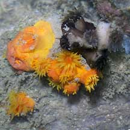 Raffles Lighthouse, Jul 06 |
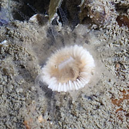 Changi, Jun 12 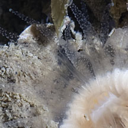 |
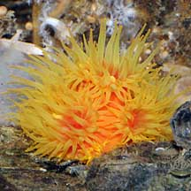 Keppel Bay, Oct 09 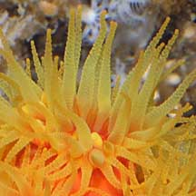 |
| Human uses: Tubastraea corals are among the first to have their bioactive compounds isolated.
One compound called tubastrine was found to have anti-viral properties.
The coral also produces substances that are toxic to the larvae of
other hard corals, probably preventing these from settling near them. Status: Some species are of Least Concern, and for others there is inadequate information as at 2024 to make an informed assesment of their conservation status in Singapore. |
|
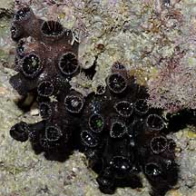 Raffles Lighthouse, May 04 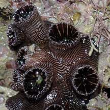 |
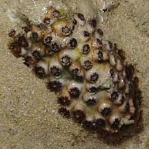 East Coast Park, Aug 09 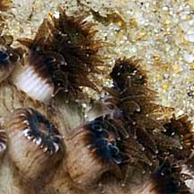 |
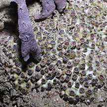 Changi, Jul 12 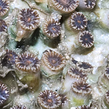 |
*Species are difficult to positively identify without close examination.
On this website, they are grouped by external features for convenience of display.
| Cave corals on Singapore shores |
On wildsingapore
flickr
|
| Other sightings on Singapore shores |
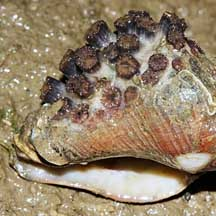 Pasir Ris Park, Jul 09 |
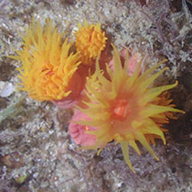 Kusu Island, Sep 19 Photo shared by Leon Tan on facebook. |
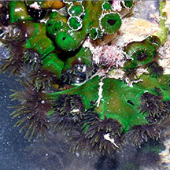 Kusu Island, Sep 23 Photo shared by Loh Kok Sheng on facebook. |
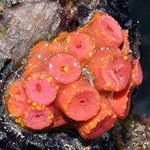 Pulau Tekukor, Mar 23 Photo shared by Loh Kok Sheng on facebook. |
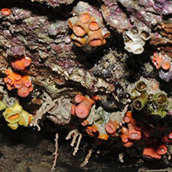 Terumbu Semakau, Nov 11 |
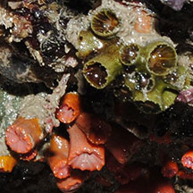 |
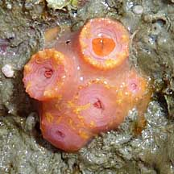 Beting Bemban Besar, Apr 10 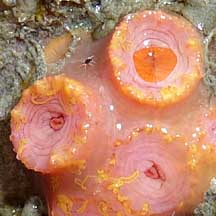 Photo shared by Loh Kok Sheng on his flickr. |
| Tubastraea species recorded for Singapore from Checklist of Cnidaria (non-Sclerectinia) Species with their Category of Threat Status for Singapore by Yap Wei Liang Nicholas, Oh Ren Min, Iffah Iesa in G.W.H. Davidson, J.W.M. Gan, D. Huang, W.S. Hwang, S.K.Y. Lum, D.C.J. Yeo, May 2024. The Singapore Red Data Book: Threatened plants and animals of Singapore. 3rd edition. National Parks Board. 663 pp. in red are those listed as threatened in the above.
|
|
Links
References
|